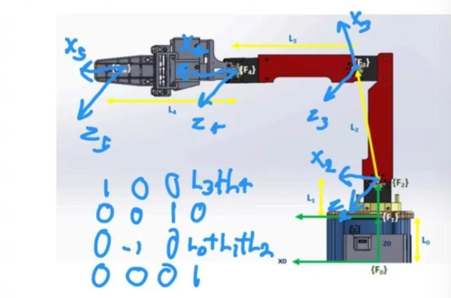
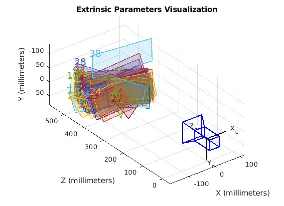
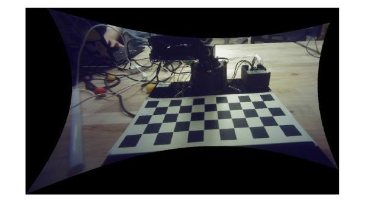
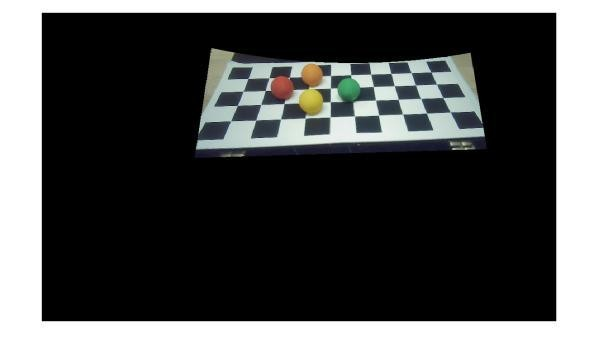
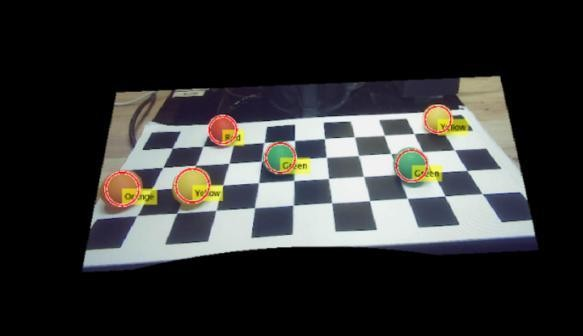

Work / 4-DOF Robot Arm Kinematics and Vision-Based Object Sorting
4-DOF Robot Arm Kinematics and Vision-Based Object Sorting
Skills MATLAB, Kinematics, Computer vision
Try it live
The final project for RBE 3001 brought together everything from the course's earlier labs: forward and inverse kinematics, velocity kinematics, camera calibration and image processing. The arm had to find balls of four colours on a checkerboard with its camera, pick each one up and sort it into the right bin.
On top of that we added two things of our own: real-time tracking, where the gripper follows a ball of one colour as someone moves it, and a game of tic-tac-toe against a person. I worked mostly on the tracking.
Kinematics
We started from our code from the earlier labs, which moved the arm to a point or along a path using forward and inverse position kinematics. We set up a reference frame on each joint and wrote the Denavit-Hartenberg table from them. Velocity kinematics from lab 4 let the arm move balls quickly without dropping them.

Seeing the board
The camera needed both calibrations. Intrinsic calibration, with MATLAB's camera calibration app, worked out the camera's focal length, optical centre and lens distortion from pictures of the checkerboard. Extrinsic calibration placed the camera relative to the board, so pointsToWorld() could turn a pixel into a position on the board.

Then we undistorted the image, blacked out everything outside the board, and used colour masks to pick out the red, orange, yellow and green balls. Each ball's centre became a target for the arm.



Sorting
The camera takes one reading of every ball and its position. The arm then goes above each ball, lowers, grabs it, lifts it back up and carries it to that colour's bin. Lifting straight up first keeps the gripper clear of the other balls. We used blocking moves so that new camera readings couldn't interrupt a move halfway through.
Real-time tracking
For tracking, the gripper follows one ball of a chosen colour around the board and ignores the others. At first it was slow and lagged well behind the ball. The masking code was inefficient, and plotting and print statements were slowing every frame down. Once we cut those and rewrote the masking, the arm kept up with the ball in real time.
Tic-tac-toe
Our last task was a game against a person. The arm uses the same colour detection to read the board and a recursive search to pick its move. When nothing in view is moving, it checks whether the board has changed to know the person has played. It worked, though it sometimes placed a ball just off the board.